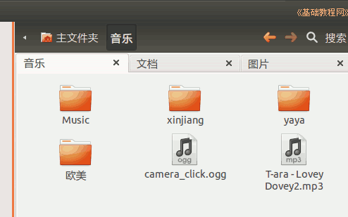

2014-2015 第一学期七年级文字处理和网页教学设计
作者：TeliuTe 来源：基础教程网
二十、学会归类存放文件 返回目录 下一课
（一）教学设计
1、学习目标：学会Ubuntu基本操作，校园网操作，中英文指法
2、注意事项：绕过弯来，既不要跳也不要落，一楼过了二楼
3、教学过程：
1）教师准备学案和板书；
2）学生整队进入，开机抄黑板上笔记；
3）教师讲解板书演示操作；
4）学生打指法、日志、完成操作；
5）教师打勾记录学生指法成绩，检查日志和操作；
注：学生抄完笔记就开始打指法、日志，老师讲完后再继续完成；
（二）板书设计(学生笔记)
第20课 学会归类存放文件
2014-11-29 16:03
1.到软件下载，linux里下载文本文件
2.到相册里，下载一个图片
3.到素材，music里下载一首歌曲
4.分别存到：“文档，图片，音乐”里
操作图示：

（三）课后记
--
周六上课总是有些奇怪的感觉，前一晚容易熬夜太晚影响
早上来八年级早上两节课调课，学生进来两个我还奇怪的
--
下午开家长会，只上一节课，1班少一节课，后面再看怎么办
接着上一节课的下载，把文件分别存放一下，文档、图片、音乐
--
记得以前火狐是直接保存，用另存为会出来一个对话框，可以选择位置
那么是什么情况会直接保存？有点搞不清楚了
--
学生下载图片时会把em.gif空的下下来，两个小女生太小注意力会分散
或者讲的时候不知道想什么去了，做的时候没想起来，看来年龄也是个问题
--
下午只上一节，忽然学生来说英语老师要占课对答案，这个班老是这样
电话过去还说以后给，我的课都按顺序的，以后又不能连着上两节内容
--
感觉这样老师有点占有欲过剩了，总想着占用别人的资源
更别说公共资源了，迟早得发生冲突，得寸进尺
--
发现整队乱了，应该大喝一声，回去重新排队，
每次都忘记了，学生两队一块往里挤，乱糟糟的摔倒了又惹事
返回目录 下一课
本教程由86团学校TeliuTe制作|著作权所有
基础教程网：http://teliute.org/
美丽的校园……
转载和引用本站内容，请保留作者和本站链接。